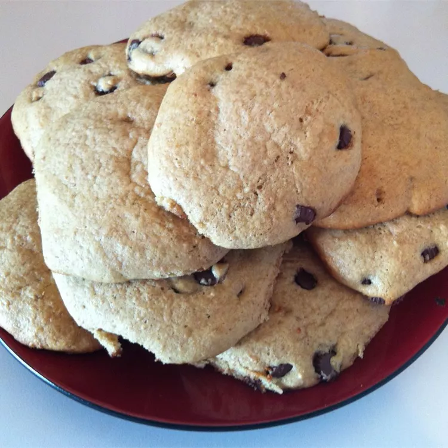

Protein Peanut Butter Chocolate Chip Cookies!
INGREDIENTS
- ½ cup butter, softened
- ½ cup peanut butter
- 1 cup packed brown sugar
- ½ cup white sugar
- 3 eggs
- 1 teaspoon vanilla extract
- ⅓ cup water
- 1 ½ cups all-purpose flour
- 1 cup powdered protein supplement
- 1 teaspoon baking soda
- ½ teaspoon salt
- 1 ⅓ cups semisweet chocolate chips
PROCEDURE
Preheat oven to 350 degrees F (175 degrees C).
In a large bowl, cream together the butter, peanut butter, brown sugar and white sugar until smooth. Beat in the eggs one at a time, then stir in the vanilla and water. Combine the flour, protein powder, baking soda and salt; stir into the creamed mixture. Fold in chocolate chips. Drop dough by heaping spoonfuls onto un-greased cookie sheets.
Bake for 10 to 12 minutes in the preheated oven. Allow cookies to cool on baking sheet for 5 minutes before removing to a wire rack to cool completely.
HOMEPAGE
